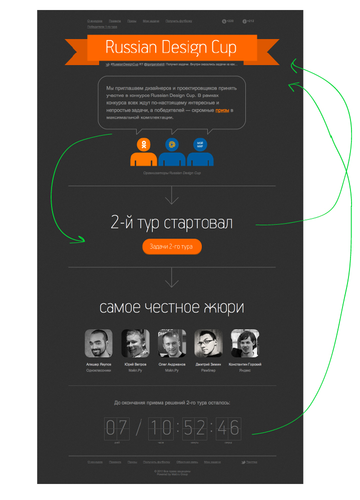
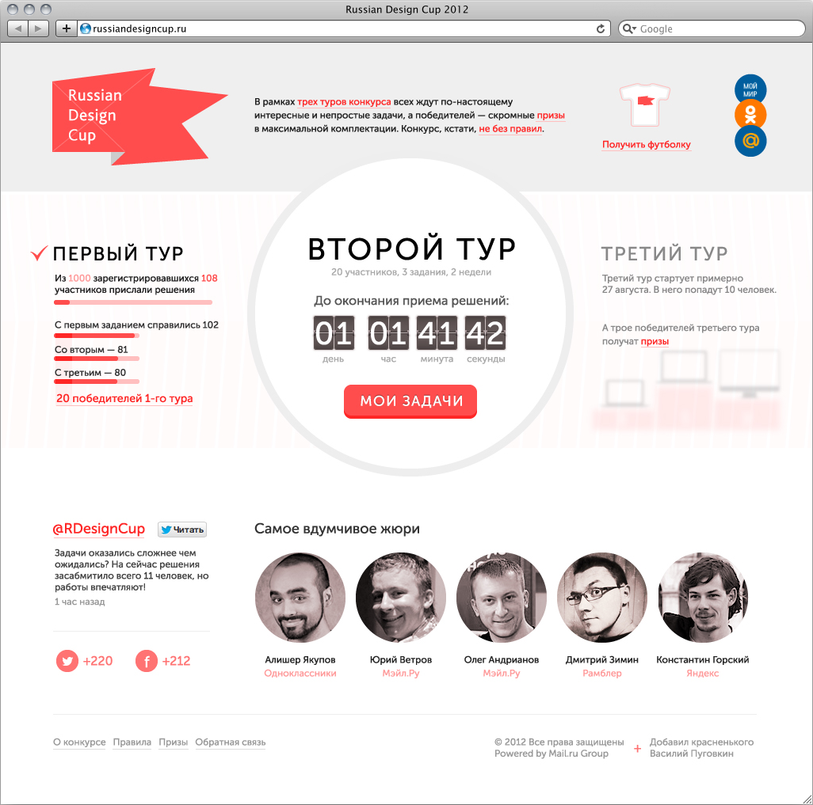

Смотрим на то, что есть с точек зрения участника и наблюдателя. Прикидываем, как можно улучшить сайт просто передвинув блоки. Основная проблема остается в информативности. 
В итоге, через пару часов получается визуально более легкая версия. На новом сайте сразу виден статус конкурса. Информация подана более компактно.
